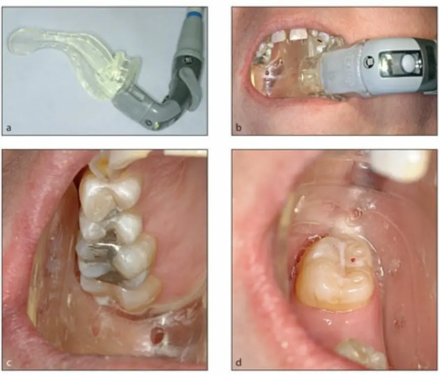

نسخه استخراجشده؛ ترجمه یا تأیید علمی انجام نشده است. وضعیت: captured
زنی ۳۲ ساله برای دو ترمیم کامپوزیت کلاس I، یکی روی مولر اول بالا و دیگری روی مولر اول پایین همان سمت، آمده و میخواهد هر دو در یک جلسه انجام شود. با رابردم باید دو بار ایزوله کنی. آیا ابزاری هست که هر دو فک همان سمت را با هم باز و خشک نگه دارد؟

سیستمهای ایزولاسیون یکپارچه، مثل Isolite، DryShield و Mr Thirsty، چند کار را در یک mouthpiece جمع کردهاند: ساکشن پیوسته، بایت بلاک، و محافظ زبان و گونه. Isolite نور هم دارد و میدان را از درون روشن میکند.
ساکشن فلزی با تیغهی زبانگیر، برای خلفی پایین. تیغهی عمودی زبان را کنار میزند و گیرهای زیر چانه آن را نگه میدارد. با رول پنبه برای تراش و سمان کردن پروتز ثابت خوب است. با بیمار تقریباً نشسته بهتر کار میکند، چون مایع در کف دهان جمع میشود. توروس پایین معمولاً مانع است. تیغهی بزرگتر از لازم به بافت زیر زبان فشار میآورد و زخمیاش میکند یا عق میآورد؛ اندازهی متوسط در بیشتر دهانها جور است.
اشتباه رایج: سفت کردن بیش از حد گیرهی زیر چانه. فلز، بافت نازک کف دهان را کبود میکند.
در نوبت طولانی خلفی، دهان را باز نگه میدارد و خستگی عضلات جونده را کم میکند. نوع بلوکی، نوع ratchet (قابل تنظیم ولی حجیم و گران) و نوع فومی یکبار مصرف دارد. mouth prop خوب پایدار است و در اورژانس سریع بیرون میآید.